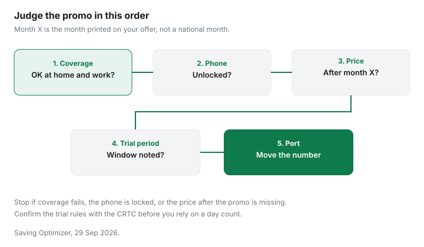

Technology · Canada
Black Friday Phone Plan Deals in Canada: How to Judge a Promo Before You Switch
A Black Friday phone plan is a contract with a headline price and a stack of conditions. The headline is what the ad is for. The conditions are what the bill becomes in month four, or what you owe if you leave with a phone still on financing. This page is a checklist. It does not quote a live plan price, and it does not rank carriers. Home internet bundles are a different product: see the mobile and home bundle guide and the bundle guide. The Internet Code guide is about home internet, not the Wireless Code.
Disclosure: Carrier and flanker affiliate programs are an offer type. Saving Optimizer may earn a commission if a partner link is added later. No partnership is claimed. An affiliate link does not change a plan's price, a financing balance or a trial period. Education only.
Key takeaways
- Write the price after the promo, not only the price in the ad. Autopay, paperless billing and a device payment can be conditions of the headline.
- Telecom Decision CRTC 2021-98, dated 4 March 2021, says device financing tied to a wireless plan falls under the Wireless Code, and the balance due when you cancel counts as an early cancellation fee. Terms longer than 24 months are not compliant with sections G.1 and G.2. Confirm the decision on the CRTC's site.
- A 15 June 2017 CRTC news release describes a 15-day trial, or 30 days if you are a customer with a disability, and says new devices from 1 December 2017 are provided unlocked. Confirm the current rules with the CRTC.
- Port the number with the new provider and keep the old line until the new one works. This page does not quote a national porting time.
- If the provider does not fix a problem, the Commission for Complaints for Telecom-television Services offers a free complaint path. Start with the provider.
Why plan promos cluster in November and December
November and December are when many households are already buying a phone, a laptop or a gift. Carriers advertise then because that is when people are looking. In 2026, Black Friday is Friday 27 November and Boxing Day is Saturday 26 December. Those are calendar dates. They are not proof that a plan price is the lowest of the year, and they are not proof that the same price will be there on Monday. The device on the same weekend is a separate decision, covered in the tech timing guide.
Treat a cluster of ads as a reason to compare offers you can read, not as a reason to switch on the day the ad appears. Screenshot the offer, including the expiry date and the lines under the monthly price. If the page does not say what happens when the promo ends, you do not yet have a price.
Price-lock terms, autopay and paperless conditions, and promo expiry
A price lock is whatever the offer says is locked, for however many months it names. Read whether the lock covers the plan price only, or also a device payment, a connection fee, or a bundle credit. A lock that ends when you remove autopay is not the same as a lock that survives a change in how you pay.
Autopay and paperless billing are conditions when the offer says the headline price requires them. Write the price you will pay if you turn either one off. A promo expiry is a date. Put that date in your calendar a month early so you can see the regular price before it is the price on the bill. This guide does not quote a dollar discount for autopay, because no carrier page is cited for one here. Check the carrier.
Bringing your own device vs a financed phone
Bringing your own phone keeps the device out of the new contract, if the phone is unlocked and the carrier accepts it. A financed phone ties a device balance to the wireless plan. Telecom Decision CRTC 2021-98, dated 4 March 2021, determines that device financing plans tied to a wireless plan fall under the Wireless Code, because the financing and the service are one contract. The decision determines that the balance you must repay when you cancel counts as an early cancellation fee. It finds that financing terms longer than 24 months are not compliant with sections G.1 and G.2 of the Wireless Code. Confirm that decision on the CRTC's site before you treat a long payoff as allowed.
Ask, in writing, what you would owe if you cancelled in month six, and whether that amount is the remaining device balance. A trade-in paid as bill credits is a third thing, closer to a discount that can stop if you leave. That comparison is on the trade-in guide. Read the carrier's trade-in terms for any named program.
Porting your number without a gap
Porting means the new provider asks to move the number. You usually start that request with the provider you are joining, not by cancelling the old line first. Cancelling first is how people lose the number. Keep the old SIM working until you have made a call on the new one. Ask both providers what you should do if the port fails, and do not assume a weekend sale desk can restart it on Boxing Day.
Write down the account number and any PIN the old provider requires for a port, before you are standing in a store with a dying battery. This page does not state an hour count. Check both carriers for the steps they publish.

Trial period rights under the Wireless Code
The CRTC's news release of 15 June 2017, published on canada.ca, says updates to the trial period let customers who are unhappy with their service cancel within 15 days and return the device in near-new condition at no cost, if they have used less than half their monthly usage limits. The same release says customers with a disability can use up to 100 percent of the plan's voice, text or data during a 30-day extended trial. Confirm the current trial rules, including any rule about packaging, on the CRTC's Wireless Code page. This guide does not treat a 2017 news release as a substitute for the code in force when you sign.
The same release says that, as of 1 December 2017, customers have the right to have a cellphone unlocked free of charge on request, and that newly purchased devices must be provided unlocked. It also describes established caps of $50 for data overage and $100 for data roaming, applied per account, unless the account holder consents to more. Confirm the current cap amounts with the CRTC. The domestic overage cap on the current code page is something to read there, not a figure this guide states as today's number beyond what that 2017 release described.
If a problem remains after you have dealt with the provider, the Commission for Complaints for Telecom-television Services offers a complaint path for wireless, internet, phone and TV. Checked 29 Sep 2026, the Commission says the service is free. Start with your provider, which is the step the Commission describes.
Checklist before you accept
Fill the first table from the offer in front of you. The second table is the rights discussed above, each one with a pointer to confirm on crtc.gc.ca. Do not accept a plan from the headline alone.
| Item | What to write down | Why it changes the price |
|---|---|---|
| Promo length | The last month the headline price applies | The bill after that month is the comparison that matters |
| Price after the promo | The regular monthly price, in writing | A short promo can cost more over a year than a duller plan |
| Autopay or paperless | Whether the headline requires either one, and the price if you opt out | A condition is not a discount you can keep after you change how you pay |
| Data speed caps | Any speed that changes after a data amount | Unlimited can still slow down. Read the threshold on the offer |
| Roaming | What a day outside Canada costs, and the roaming cap you are asked to accept | Confirm the current data-roaming cap with the CRTC. Do not assume the ad includes travel |
| Activation or connection fees | Any one-time fee on the checkout page | A one-time fee belongs in the first-year total |
| Device financing tied to the plan | Term, monthly device amount, and the balance due if you cancel | Decision 2021-98 treats that balance as an early cancellation fee. Terms over 24 months are not compliant with G.1 and G.2 |
| Topic | What the text says | Verify at crtc.gc.ca |
|---|---|---|
| Trial period | The 15 June 2017 release: cancel within 15 days, device in near-new condition, under half the monthly usage limits. A customer with a disability: 30 days, and up to the full voice, text or data allowance | Wireless Code, plain language |
| Cancellation and financing | Decision 2021-98: a device-financing balance due on cancel is an early cancellation fee. Financing longer than 24 months is not compliant with sections G.1 and G.2 | Telecom Decision CRTC 2021-98 |
| Unlocked devices | The 15 June 2017 release: from 1 December 2017, new devices are provided unlocked, and existing devices are unlocked free of charge on request | CRTC news release, 15 June 2017 |
Sources & date stamps
- CRTC news release, 15 June 2017, "CRTC puts an end to locked cellphones and unlocking fees," on canada.ca. Trial period of 15 days with the device returned in near-new condition and usage under half the monthly limits; 30-day trial for customers with a disability, up to 100 percent of voice, text or data. Devices unlocked free on request, and new devices provided unlocked, as of 1 December 2017. The release describes data-overage and data-roaming caps of $50 and $100 per month, per account. Confirm the current code, including today's cap amounts, with the CRTC.
- Telecom Decision CRTC 2021-98, 4 March 2021, Wireless Code — Application to device financing plans. Device financing tied to a wireless plan is inside the Wireless Code. The balance due on cancellation is an early cancellation fee. Terms longer than 24 months are not compliant with sections G.1 and G.2. Confirm the decision on the CRTC's site.
- Commission for Complaints for Telecom-television Services, ccts-cprst.ca, checked 29 Sep 2026. Complaint help for wireless, internet, phone and TV after you have given the provider a chance to fix the problem. The Commission says the service is free.
Frequently asked questions
Are Black Friday phone plans actually cheaper?
A promo can be cheaper for the months it names, and the same plan can cost more after that month. This guide does not quote a live plan price. Write the price after the promo, any autopay or paperless condition, and any device payment before you compare it with the plan you have. Confirm the current offer on the carrier's page.
What should I check before switching carriers?
Check coverage where you stand at home and at work, whether the phone is unlocked, the price after the promo ends, and the trial-period window. Add activation or connection fees and any device balance the new plan requires you to repay if you leave. A home-internet bundle is a separate discount. Read that offer on its own page.
Can I cancel a new plan if coverage is bad?
A CRTC news release dated 15 June 2017 says customers can cancel within 15 days and return the device in near-new condition at no cost if they have used less than half their monthly usage limits, with a 30-day trial for customers with a disability. Confirm the current trial rules on the CRTC's Wireless Code page before you rely on a day count. The Commission for Complaints for Telecom-television Services can take a complaint after you have given the provider a chance to fix it, and that service is free.
Do I need a new phone to switch?
No. Bringing your own device is a real option when the phone is unlocked and it works on the network you are joining. A CRTC news release dated 15 June 2017 says that, as of 1 December 2017, new devices must be provided unlocked and existing devices are unlocked free of charge on request. Confirm that rule on the CRTC's page, and confirm your phone with the carrier before you port.
Will I lose my number if I switch?
A port is how the number moves to the new provider, and it is not automatic just because you bought a SIM. Start the port with the new provider, keep the old service until the new one works, and ask both providers what happens to the number if the port does not complete. This guide does not quote a national hour count for how long a port takes.
Researched and drafted with AI assistance and fact-checked against official Canadian sources. How we create content.